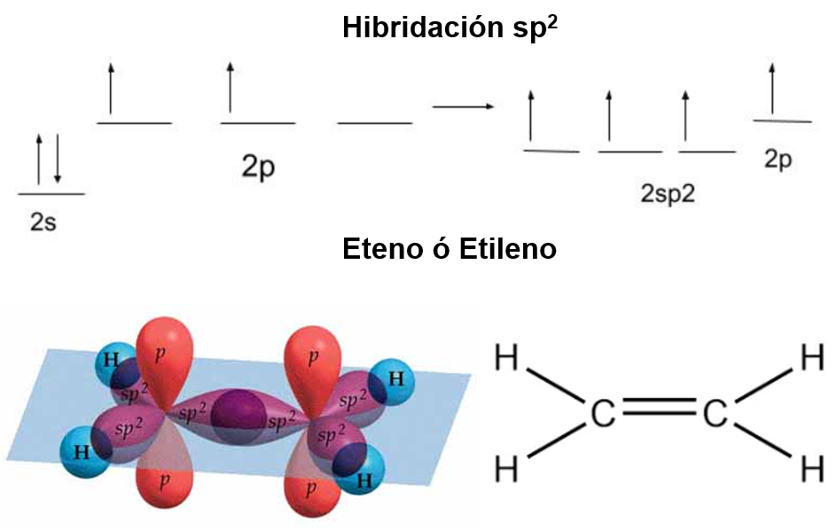
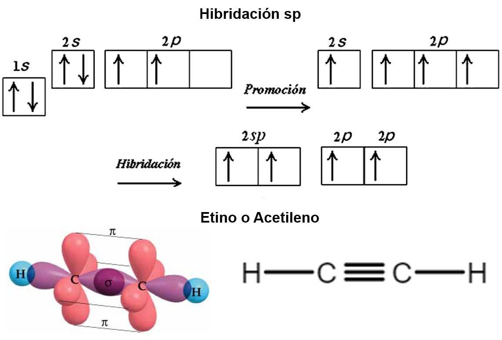
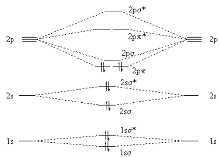
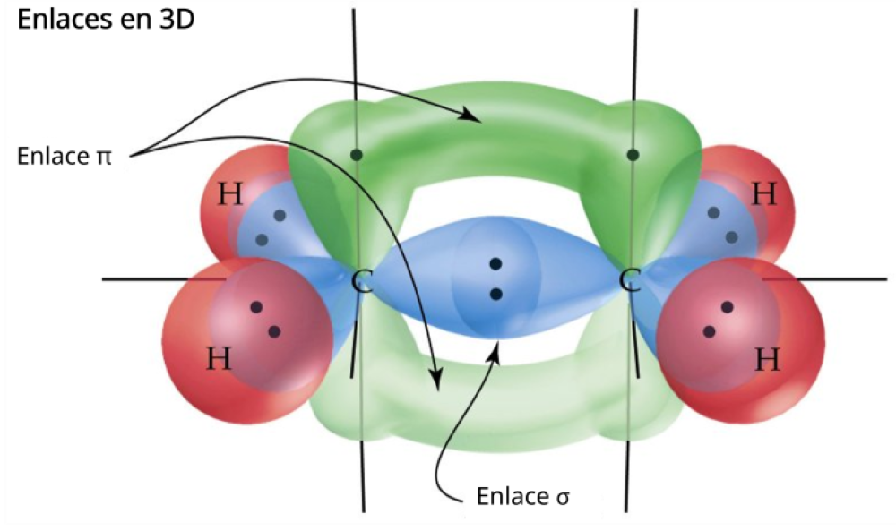
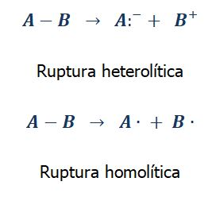

Química Orgánica
Especializada para alumnos de Medicina
Capítulo 1: Estructura Molecular y Propiedades
Especializada para alumnos de Medicina
Capítulo 1: Estructura Molecular y Propiedades

| Característica | Enlace Iónico | Enlace Covalente |
|---|---|---|
| Formación | Transferencia de electrones | Compartición de electrones |
| Elementos | Metal + No Metal | No Metal + No Metal |
| Ejemplo | NaCl (Cloruro de sodio) | CH₄ (Metano) |
| Electronegatividad | Diferencia > 1.7 | Diferencia < 1.7 (polar o no polar) |


Orbitales sp³ - Geometría tetraédrica del metano

Orbitales sp² - Geometría trigonal plana

Orbitales sp - Geometría lineal del acetileno

Diagrama completo de orbitales moleculares del acetileno
| Hibridación | Geometría | Ángulo | Enlaces | Orbitales p | Rotación | Ejemplo |
|---|---|---|---|---|---|---|
| sp³ | Tetraédrica | 109.5° | 4 σ | Ninguno | Libre | CH₄ |
| sp² | Trigonal plana | 120° | 3 σ + 1 π | 1 | No | C₂H₄ |
| sp | Lineal | 180° | 2 σ + 2 π | 2 | No | C₂H₂ |

Enlace Sigma (σ) - Superposición frontal y Pi (π) - Superposición lateral
| Tipo de Enlace | Longitud (pm) | Energía (kJ/mol) | Fortaleza |
|---|---|---|---|
| C-C (simple) | 154 pm | 347 | Menor |
| C=C (doble) | 134 pm | 614 | Intermedia |
| C≡C (triple) | 120 pm | 839 | Mayor |
| C-H | 109 pm | 413 | Alta |
Cuando un enlace covalente se rompe, el par de electrones compartidos puede distribuirse de dos formas, dando lugar a dos tipos de ruptura:

Izquierda: ruptura homolítica (flechas de medio arpón → radicales). Derecha: ruptura heterolítica (flecha de arpón completo → iones).
| Característica | Homolítica | Heterolítica |
|---|---|---|
| Distribución de electrones | 1 electrón para cada átomo | Ambos electrones a un átomo |
| Productos | Radicales libres (A•, B•) | Iones (catión ⁺ / anión ⁻) |
| Flechas | Medio arpón (media punta) | Arpón completo (punta entera) |
| Condiciones típicas | Luz UV, calor, peróxidos | Solventes polares, Δ electronegatividad |
| Ejemplo | Cl₂ → 2 Cl• | HCl → H⁺ + Cl⁻ |
| Relevancia biológica | Estrés oxidativo, daño al ADN | Ionización de fármacos, carbocationes en reacciones |
Haz clic en cada nodo para desplegar u ocultar sus ramas. (No requiere archivos externos.)
Haz clic en la tarjeta para voltearla y ver la respuesta. Luego califícate con honestidad.
Uso de la información de clase para resolver problemas en tres profesiones:
a) Metanol: el C tiene 4 enlaces σ (3 C–H + 1 C–O) y 0 enlaces π → número estérico 4 → sp³ (tetraédrico, 109.5°). Formaldehído: el C tiene 3 enlaces σ (2 C–H + 1 C–O) y 1 enlace π (C=O) → número estérico 3 → sp² (trigonal plano, 120°).
b) El doble enlace C=O posee un enlace π débil que se rompe con facilidad por ruptura heterolítica: el O (más electronegativo) retiene el par, dejando al carbono con carácter positivo (electrófilo). Ese carbono electrofílico ataca proteínas y ADN formando aductos → toxicidad. Además, la geometría plana sp² facilita el ataque de nucleófilos biológicos.
La energía (UV, calor) produce ruptura homolítica de enlaces → radicales libres (•OH, O₂•⁻, ROO•). Estos roban electrones de otras moléculas en cadena: peroxidación lipídica de membranas, roturas del ADN y daño proteico.
Los antioxidantes (vitamina C, vitamina E, glutatión) donan un electrón o un H• al radical, estabilizándolo y terminando la cadena radicalaria. Caso ligado a clase: la intoxicación por paracetamol genera NAPQI (electrófilo sp²) que agota el glutatión; el antídoto N-acetilcisteína lo repone.
| Compuesto | Hibridación | Mecanismo Tóxico | Aplicación Clínica |
|---|---|---|---|
| Benceno | sp² (aromático) | Metabolito epóxido daña ADN → Leucemia | Solvente industrial (prohibido) |
| Formaldehído | sp² (C=O) | Forma aductos con proteínas y ADN | Desinfectante, conservante |
| Acetileno | sp (triple enlace) | Alta reactividad → irritante | Anestésico histórico |
| Metanol | sp³ | Metabolito: formaldehído + ácido fórmico → ceguera | Antídoto: Etanol o Fomepizol |
Los carbonos sp² del anillo son trigonales planos (120°): el anillo es completamente plano y su nube π deslocalizada establece interacciones π–π con residuos aromáticos del sitio activo de la COX, posicionando el fármaco correctamente.
Una vez acomodado, el grupo acetilo (carbono sp² del C=O, electrófilo por ruptura heterolítica del π) acetila el residuo Ser530 de la COX, inactivándola de forma irreversible → bloquea la síntesis de prostaglandinas (efecto analgésico/antiinflamatorio).
a) El doble enlace = 1 σ + 1 π. El enlace π se forma por superposición lateral de orbitales p; si hubiera rotación, esa superposición se rompería. Por eso el C=C (sp²) es rígido y genera isomería geométrica.
b) Cada isómero presenta una forma 3D distinta: solo la geometría trans (E) complementa correctamente el receptor de estrógeno en mama, actuando como antiestrógeno en el cáncer de mama. La hibridación sp² y la rigidez del π determinan así el efecto terapéutico (la geometría equivocada puede incluso actuar como agonista en otros tejidos).
a) Desoxirribosa: carbonos con 4 enlaces σ → sp³. Los enlaces σ permiten rotación libre, dando flexibilidad al esqueleto azúcar-fosfato para plegarse en la doble hélice.
b) Bases nitrogenadas: anillos planos con dobles enlaces conjugados → carbonos sp². La planicidad y las nubes π permiten el apilamiento π–π de las bases, que estabiliza la doble hélice, además del apareamiento por puentes de hidrógeno.
a) CH₃: 4 σ → sp³. C carbonílico (C=O): 3 σ + 1 π → sp². C carboxílico (COO⁻): 3 σ + 1 π → sp².
b) El grupo C=O tiene 1 enlace σ (fuerte, head-on) + 1 enlace π (débil, lateral). Por eso el C=O (799 kJ/mol) es más corto y fuerte que un C–C simple, pero su π es el punto de ataque de nucleófilos enzimáticos.
c) En la formación de acetil-CoA (complejo piruvato deshidrogenasa) se rompe el enlace C–C del carboxilo (ruptura que libera CO₂); los electrones se redistribuyen y el NAD⁺ capta electrones: es un ejemplo biológico de cómo la célula transforma enlaces σ/π en energía utilizable (ciclo de Krebs).
"Si tiene cuatro enlaces, es sp³ (tetraédrico, 109.5°)"
"Si tiene un doble, es sp² (trigonal, 120°)"
"Si tiene un triple, es sp (lineal, 180°)"
Ejemplo: En CH₄: 4 átomos H + 0 pares libres = 4 → sp³
sp³: 109.5° → "Casi 110, como un tetraedro"
sp²: 120° → "Como un triángulo equilátero"
sp: 180° → "Línea recta, como una regla"
Sigma (σ): Sólido, fuerte, permite rotación
Pi (π): Péndulo, débil, NO permite rotación
HOMolítica: reparte parejo (1 e⁻ cada uno) → radicales (medio arpón)
HETERolítica: uno se lleva todo el par → iones (arpón completo)
Haz clic en cada término para ver su definición:
Error: "Si es tetraédrico, entonces es sp³" (sin verificar los enlaces)
Error: Asumir que el carbono siempre forma 4 enlaces simples
Error: "Un enlace más largo es más fuerte"
Error: Dibujar rotación alrededor de dobles o triples enlaces
Error: Calcular hibridación solo con átomos enlazados
Error: "El carbono puede formar 4 enlaces sin excitarse"
Error: Usar flecha completa para radicales o medio arpón para iones
Pon a prueba tus conocimientos: en cada ciclo se muestran 10 preguntas al azar de una base de 30. Cada vez que entras a esta pestaña se sortea un nuevo ciclo.